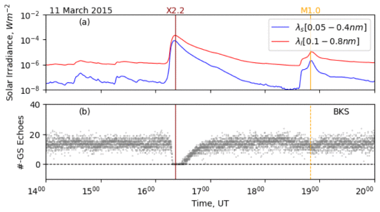
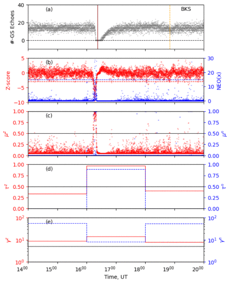
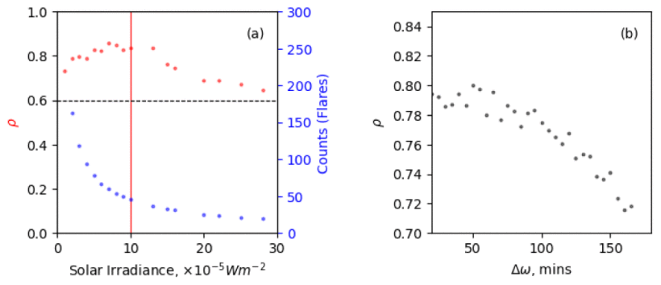

SWF Anomaly Detection in SuperDARN
Probabilistic shortwave fadeout detection in SuperDARN time series using Z-score and nonlinear energy operator methods — Best Paper Award, IEEE WiSEE 2021
Overview
Short-wave fadeout (SWF), a transient ionospheric response to solar flares, disrupts HF communication by enhancing ionization in the D-layer, causing severe absorption of HF radio signals. This study introduces two probabilistic anomaly detection schemes for identifying SWF events generated by M and X class flares in Super Dual Auroral Radar Network (SuperDARN) observations. Leveraging statistical Z-score and nonlinear energy operators, the schemes exhibit varying performance influenced by flare intensity and scheme parameters. Remarkably, a correlation coefficient of ~0.73 is observed between monthly flare and SWF counts, underscoring the effectiveness of the Z-score scheme in detecting SWF events.

Fig 1. GOES and Blackstone (BKS) radar measurements during a solar flare and associated SWF event on 11 March 2015: (a) GOES X-ray flux in the 0.1–0.8 nm (red) and 0.05–0.4 nm (blue) wavelength bands and (b) number of BKS backscatter echoes. The vertical lines passing through both panels identify the peak times of X2.2 (red) and M1.0 (orange) class events.
The figure above illustrates Blackstone (BKS) radar measurements and GOES X-ray fluxes on March 11, 2015. The X2.2 class flare at 16:22 UT led to a rapid decrease in backscatter echoes within 10 minutes, causing a complete radio blackout followed by a gradual recovery over 30–60 minutes. The M1.0 class event initiated compoundly, with a small C-class onset around 8:40 UT followed by a larger M-class onset at 8:45 UT. While the M-class event showed a weaker response with a subtle decrease in BKS backscatter echoes, the X-class flare exhibited a distinct inverted spike — a characteristic signature of short-wave fadeout commencement.
Detection Schemes
Two different spike detection techniques are used to identify SWF signatures in SuperDARN backscatter observations: (A) a modified Z-score based spike detection technique (the Whitaker-Hayes algorithm), and (B) a nonlinear energy operator (NEO).
A. Modified Z-score
Z-score represents how many standard deviations away a given observation is from the mean. By contrast, the modified Z-score is estimated using the median (M) and median absolute deviation (MAD) instead of mean and standard deviation. The modified Z-score assumes the backscatter count is normally distributed. The multiplier 0.6745 is the 0.75th quartile of the standard normal distribution, to which the MAD converges.
B. Nonlinear Energy Operator (NEO)
The NEO provides a measure of change in the instantaneous energy (i.e., squared magnitude of the considered signal) in the signal — here, SuperDARN radar backscatter count. Previous studies found that NEO can discriminate between spikes and noise better than a simple thresholding detector, specifically when the signal-to-noise ratio (SNR) is low. The NEO adapts to changes in SNR level to identify the spike in the data.
C. Probabilistic Detection Schemes
The algorithm applies a time window to the radar data obtained on each beam and calculates a spike score using both operators. The difference between the spike score and a spike threshold is projected onto a sigmoid curve to estimate probability. The algorithm then estimates median spike probability (μ) across the beams, multiple beam detection probability (θ), and reliability score (γ) for all beams during that time window. The detection probability (τ) is estimated by multiplying μ and θ. The final output is the probability and reliability score, both of which need to be high for a successful spike detection.
| Symbol | Description | Range |
|---|---|---|
| μ | Median spike probability across the beam: Probability that a spike occurred. | [0–1] |
| θ | Beam detection probability: Probability that a spike occurred across multiple beams within ΔT interval. | [0–1] |
| τ | Probability that a spike occurred across different radar beams within ΔT interval. | [0–1] |
| γ | Reliability Score: Quantify uncertainty in τ estimates. A high value is expected for a reliable τ estimate. | [0–1] |
Results & Analysis

Fig 2. Results from the SWF detection scheme applied to BKS radar data on 11 March 2015: (a) number of BKS backscatter echoes, (b) spike scores, (c) median probabilities, (d) detection probabilities within 2-hour window, and (e) reliability scores. Red and blue colors represent outputs from the Z-score and NEO operators, respectively.

Fig 3. Variation of the solar flare – SWF spike correlation coefficient versus (a) solar flare irradiance, and (b) length of time window. The correlation coefficient maximizes near a minimum flare intensity threshold corresponding to X1 class (red vertical line).
Summary & Conclusion
The scheme utilizes statistical Z-score and nonlinear energy operator (NEO) based spike detection techniques to identify sudden reductions in the number of SuperDARN backscatter echoes produced by SWF. The Z-score method outperforms the NEO method, particularly for weaker M-class flares. The correlation was also found to decrease substantially when the time window for spike detection is longer than an hour or so. Future work includes: (1) creating a list of SWF events in the SuperDARN historical archive for wider scientific community use, and (2) developing a near real-time monitoring system for tracking the occurrence, extent, and intensity of ongoing SWF events for radio system operators.